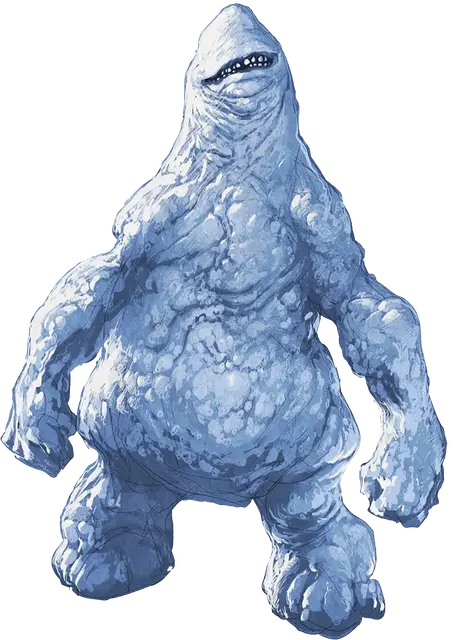

Снежный голем
Snow Golem
Средний Конструкт, без мировоззрения

Класс Доспеха 8
Хиты 39 (6к8 + 12)
Скорость 10 футов
| мод | спас | ||
|---|---|---|---|
| СИЛ | 15 | +2 | +2 |
| ЛОВ | 6 | −2 | −2 |
| ТЕЛ | 14 | +2 | +2 |
| мод | спас | ||
|---|---|---|---|
| ИНТ | 1 | −5 | −5 |
| МДР | 6 | −2 | −2 |
| ХАР | 1 | −5 | −5 |
Уязвимость к урону огонь
Иммунитет к урону холод, яд; дробящий, колющий, рубящий от немагических атак
Иммунитет к состояниям паралич, очарование, отравление, окаменение, истощение, испуг
Чувства слепое зрение 60 футов (слеп за пределами этого радиуса), пассивное Восприятие 8
Опасность 3 (700 опыта)
Бонус мастерства +2
Особенности
Поглощение холода. Каждый раз, когда голем должен получить урон холодом, он не получает урон, и вместо этого восстанавливает число хитов, равное причиняемому урону холодом.
Неизменяемая форма. Голем обладает иммунитетом ко всем заклинаниям и эффектам, изменяющим его форму.
Таяние. Находясь в области чрезвычайной жары, голем теряет 1к6 хитов в начале каждого своего хода.
Необычная природа. Голем не нуждается в воздухе, еде, питье и сне.
Действия
Мультиатака. Голем совершает три рукопашные атаки.
Удар. . Рукопашная атака оружием: +4 к попаданию, досягаемость 5 фт., одна цель. Попадание: 5 (1к6 + 2) дробящего урона плюс 7 (2к6) урона холодом.
Снежок. . Дальнобойная атака оружием: +0 к попаданию, дистанция 60 фт., одна цель. Попадание: 9 (2к6 + 2) урона холодом.
Описание
Снежный голем — это куча снега, оживлённая с помощью магии. Немагическое оружие проходит сквозь его снежную массу, не причиняя ему никакого заметного вреда, и только жара губит его.